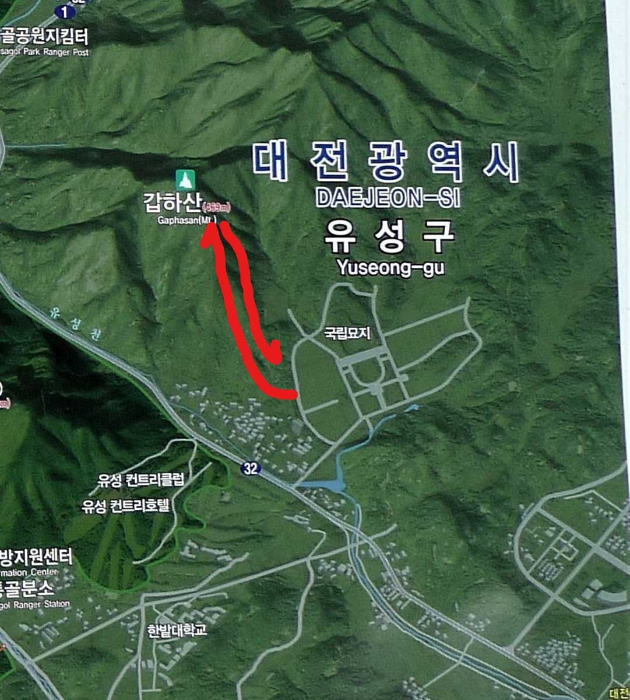
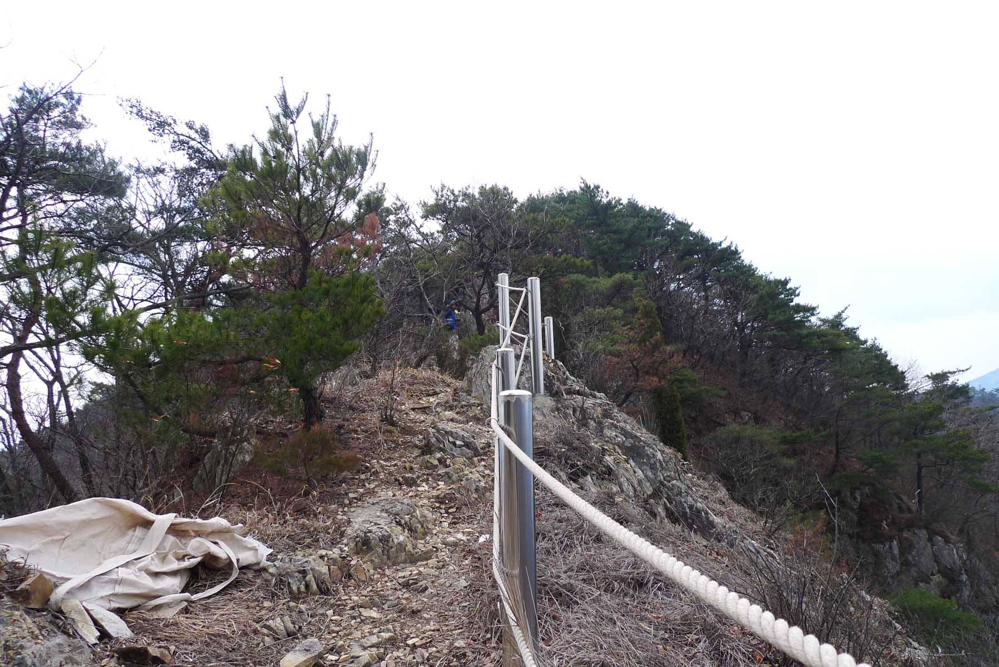
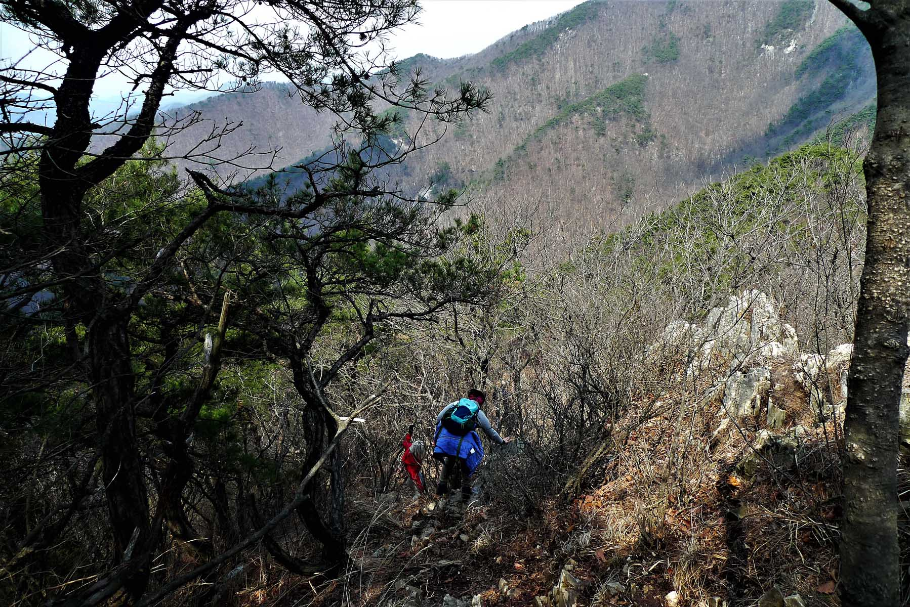
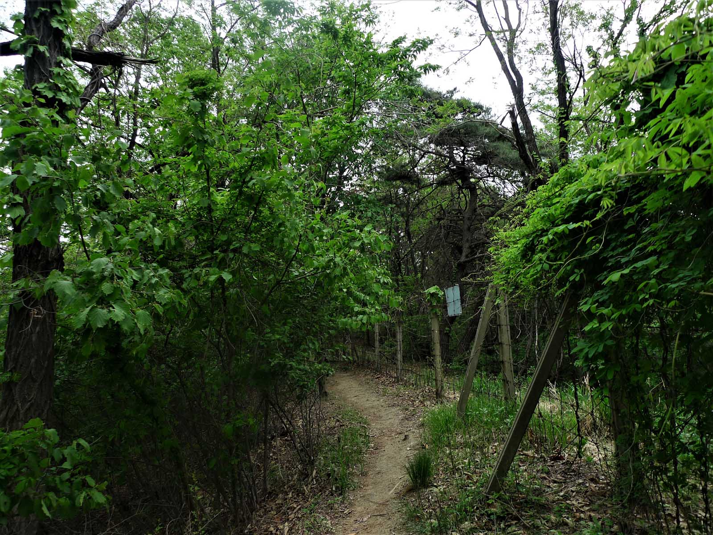

How to get there

As per usual Daejeon hikers met at KAIST at 10:00 a.m. and proceeded to drive to base of the Gaphasan
(갑하산). To drive to Gaphasan (갑하산) you follow the signs to the Yuseong (유성) Interchange and then turn
right at the sign for the National Cemetery (극립대전현충원). One way to access the mountain trail is to go
into the National cemetery entrance and drive to the road that leads to the left where you will spot a
steam locomotive with railcars which acts a monument to the fallen railroad workers. Park there and then
follow the road up a little that goes to the left and then you reach the boundary fence. Look for a hole
in the fence with a path on the other side, slip through and follow the trail to the top. Otherwise you
can drive past the entrance to the cemetery and park about one half km past the entrance at a restaurant
/ fuel station. If this is a problem, drive on the next right and park by the edge of the road. Once you
walk up the road the trail will be obvious in front of you.
National Cemetery (국립대전현충원)

Soon the trail becomes very steep with the steepest portions having ropes present for assistance. As you
reach the upper reaches there are some good views of the National cemetery below. You will be amazed at
the sheer size of the national cemetery which is reserved exclusively for veterans. It is the 2nd
National cemetery to be established in Korea after the national cemetery in Seoul had reached capacity.
Construction began in 1979 and its massive area contains a Memorial Tower and Memorial Gate, Patriotic
Spirit Exhibition Center, an outdoor exhibition space, fountains, statues, sculptures, pavilions, a
man-made pond in the shape of the Korean peninsula. All 46 crew members who lost their lives in the
tragic 2010 sinking of the Cheonan (천안) are buried here. Since the area is open to the public anyone can
visit and pay their respects to the Koreans who died patriotically serving their homeland.
Continuing to OoSanBong (우산봉)

The top of the mountain is wooded and the best views there are found in the winter. If you have the time
I recommend you to continue onwards to the next peak OoSanBong (우산봉) (573m), as it is not too distant
but there is a relatively deep saddle one must traverse to reach it. The trail is one of my favorite in
all of Korea because you are on the ridge the whole way and there are interesting rocks to view and some
challenging scrambles too. On this hike we returned by the same trail (without continuing on to
OoSanBong) and arrived at the bottom around 2:30 pm. A word of warning, the trail down is steep and
difficult in places due to the loose gravel. It is easy to slip on the way down in the spring when the
trail is dry as there are many small pebbles on the trail, so be careful. On this hike we arrived back
at KAIST at 3:00pm.
Crossing the fence

If you do decide to venture further onto OoSanBong (우산봉), it will add about 2 hours to the hike as it is
a higher peak and there are some challenging portions of the trail to it from GapHaSan (갑하산) Peak. The
trail to the next peak is very steep down but there are some ropes as an aid alongside the trail. Your
journey will take you along a very special ridge with steep drop offs on both sides. After you climb to
the top of this peak be careful on the way down. You must take a right turn when part way down. It is an
obvious location because it is the only place where the trail has a major junction. Going to the right
you will soon come close to the fencing that marks the National Cemetery boundary. You need to get to
the other side of this fence so continue down and look for the openings in the fence until you see that
there is an obvious trail on the other side. That is the one to squeeze through. If you miss this hole,
the fence becomes tall and difficult to get to the other side of so you will have to climb over the
fence. We missed the opening and ended up going down to a deep gully where you can see the cemetery road
on the other side. It is not too difficult and I did it despite being almost 77 years old. Watch out for
small nails on the top of the fence post so that you will not rip your pants as it did to one of our
hikers on this hike.
Easily Accessible
In terms of location this is a good mountain to hike as it is located within the city limits of Daejeon
meaning it is accessible by public transportation. The trail is a direct route up the mountain with few
ups and downs, even more so if you continue on the next peak. Also there are some rocky areas that make
the hike interesting and it is not a difficult hike. The other advantage of this mountain is that in the
spring it has beautiful Azealia in blossom along the trail. The only negative is that the trail is very
steep in places but then there are ropes to assist one in these portions of the trail.
Founder joins us
A picture includes Juli Scherer, with the blue coat, who founded the Daejeon Hikers on the 90s. She
returned to Korea for business and went on the hike with us during her visit. On the left hand side of
the photo in the distance one can see part of the Korean National Cemetery, one of four in Korea. In the
background is the city of Daejeon. On the hike this day I also had our dog BeBe, a Maltese dog that
liked to hike with us. Since this mountain was not in a national park, I could bring BeBe. Please
remember that dogs are not allowed on hikes within the national parks and the fine for having a dog is very steep.
Former leader of Daejeon hikers
In the center is George Furst (with BB in his shirt to keep him warm) who along with JungMoo (이종무) who
have together led the hiking group since 2013. To the right in the photo is Dr. Alan England who was
previously the leader of the Daejeon hikers for over 10 years starting in 2001 and is still dearly
missed. Alan was also know to enjoy caving while living in Korea so he kept very active as a senior
citizen. During a visit to Korea we had a special hike to welcome him back which was attended by many
hiking members, (most of whom hope they are still able to hike when they are Alan’s age) who were
anxious to greet Alan.

.jpg)
.jpg)